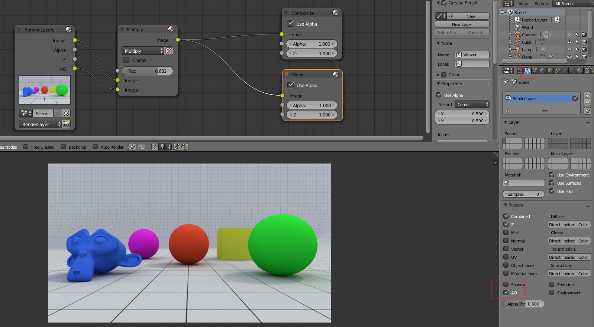
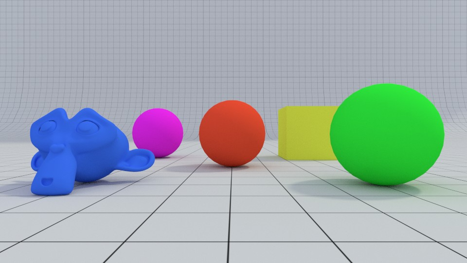
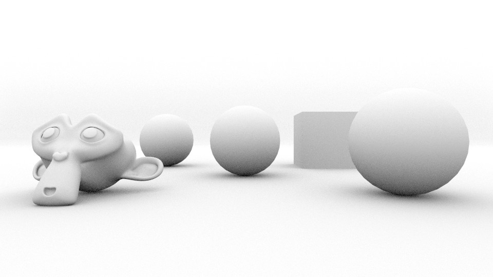
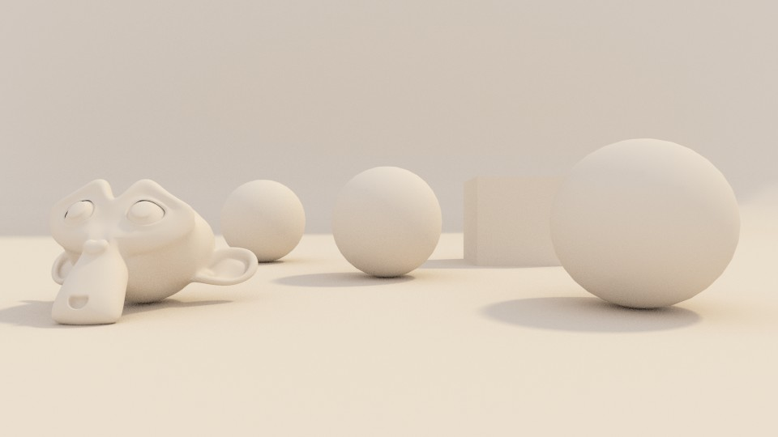

Render Pass Ambient Occlusion
Ambient Occlusion é um cálculo sofisticado de raytracing que simula as sombras suaves da Global Illumination. Não existe AO no mundo real, é um truque de renderização (não tem qualquer relação com luzes) fisicamente não correto mas geralmente com bons resultados. É uma espécie de iluminação global indireta de cima para baixo. Cria a impressão de que os objetos presentes na cena são iluminados por uma luz suave e difusa (sem ponto de origem e direção). O cálculo é baseado nas formas, proximidade e orientação dos objetos e como estes bloqueiam (ocludem) a luz. Quanto mais próximo um objeto estiver dos seus vizinhos, mais luz é bloqueada e vice-versa.
Foi criada uma cena com diversos objetos para exemplificar a utilidade da render pass AO (Ambient Occlusion). A cena foi iluminada com uma luz Sun e com Background. Não foi ativado o Ambient Occlusion no painel World.
No painel Render Layers, foi ativado AO nas Passes. Foi utilizado o Node Editor para combinar a imagem original com o resultado da pass AO.
Em baixo tem a imagem original, o resultado da pass AO e o resultado da combinação entre as duas com Multiply.
 
Mais um exemplo da utilização da pass AO. Em cima, render original. Em baixo, render combinado com a pass AO utilizando o método apresentado na primeira imagem.
